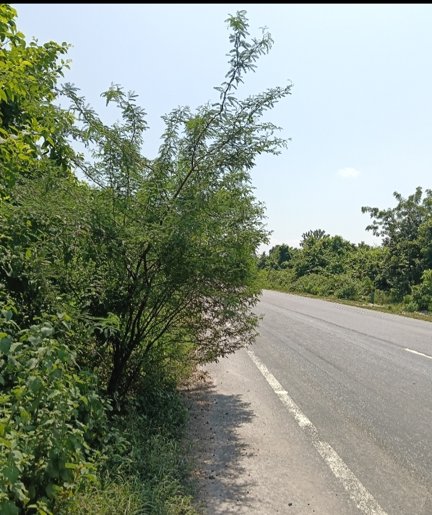

భూపాలపల్లి – కాళేశ్వరం NH-353C జాతీయ రహదారిపై పొంచి ఉన్న ప్రమాదం!
రోడ్డుపైకి ఏపుగా విస్తరిస్తున్న ముళ్లపొదలు.. కనిపించని మూలమలుపులు.. ప్రాణభయంతో వాహనదారుల ప్రయాణం!

మానేరు ప్రతినిధి, భూపాలపల్లి: జయశంకర్ భూపాలపల్లి జిల్లా కేంద్రం నుంచి ప్రముఖ పుణ్యక్షేత్రమైన కాళేశ్వరం దేవస్థానాన్ని కలిపే అత్యంత కీలకమైన **NH-353C జాతీయ రహదారిపై** ప్రయాణం రోజురోజుకూ అత్యంత ప్రమాదకరంగా మారుతోంది. రహదారికి ఇరువైపులా ఏపుగా పెరిగిన ముళ్లచెట్లు, తుమ్మ పొదలు రోడ్డు సగానికి పైగా విస్తరించడంతో నిత్యం రాకపోకలు సాగించే ప్రయాణికులు, భక్తులు తీవ్ర భయాందోళనలు వ్యక్తం చేస్తున్నారు.
కాళేశ్వరం ముక్తీశ్వర స్వామి దర్శనార్థం రాష్ట్రం నలుమూలల నుంచే కాకుండా మహారాష్ట్ర, ఛత్తీస్గఢ్ ప్రాంతాల నుంచి నిత్యం వందలాది ఆర్టీసీ బస్సులు, భారీ లారీలు, కార్లు మరియు ద్విచక్ర వాహనాలు ఈ రహదారి గుండా ప్రయాణిస్తుంటాయి. అయితే ప్రధాన మలుపుల వద్ద రోడ్డుపైకి భారీగా చొచ్చుకువచ్చిన చెట్ల కొమ్మల వలన ఎదురుగా ఏ వాహనం వస్తుందో కనిపించక తీవ్ర ప్రమాదాలు చోటుచేసుకుంటున్నాయి.
ముఖ్యంగా రాత్రి వేళల్లో ఎదురుగా వచ్చే వాహనాల లైట్ల వెలుతురులో రోడ్డు అంచున ఉన్న ఈ ముళ్లపొదలు ఏమాత్రం కనిపించకపోవడంతో ద్విచక్ర వాహనదారులు నేరుగా ముళ్లపొదల్లోకి దూసుకెళ్లి తీవ్రంగా గాయపడుతున్నారు. అటు భారీ వాహనాలు ఎదురైనప్పుడు సైడ్ ఇచ్చేందుకు రోడ్డు పక్కన జాగ లేక టైర్లు పక్కకు దిగి వాహనాలు బోల్తా పడుతున్న సంఘటనలు కూడా చోటుచేసుకుంటున్నాయి.
కోట్లాది రూపాయలు వెచ్చించి జాతీయ రహదారిగా ప్రకటించినప్పటికీ, కనీస నిర్వహణ చేపట్టకపోవడంపై స్థానిక ప్రజలు తీవ్ర ఆగ్రహం వ్యక్తం చేస్తున్నారు. ఇప్పటికైనా సంబంధిత జాతీయ రహదారుల ప్రాధికార సంస్థ (NHAI) అధికారులు, జిల్లా యంత్రాంగం తక్షణమే స్పందించి, యుద్ధప్రాతిపదికన NH-353C రహదారికి ఇరువైపులా ఉన్న ముళ్లపొదలను తొలగించి, రోడ్డుకు ఇరువైపులా స్పష్టమైన సైన్ బోర్డులు ఏర్పాటు చేసి ప్రయాణికుల ప్రాణాలను కాపాడాలని ప్రజలు, వాహనదారులు గట్టిగా డిమాండ్ చేస్తున్నారు.